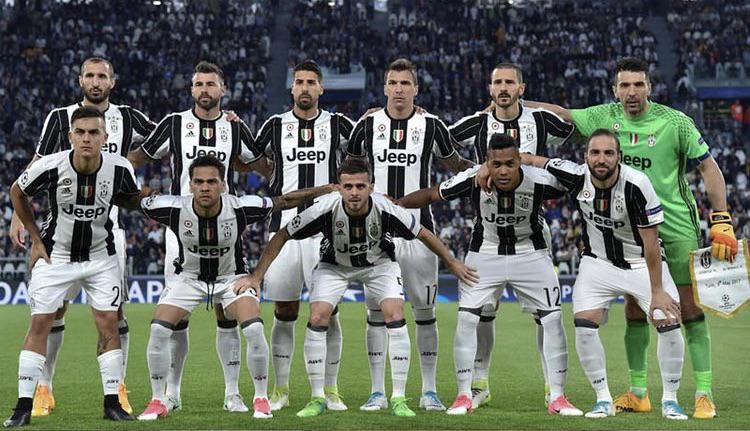
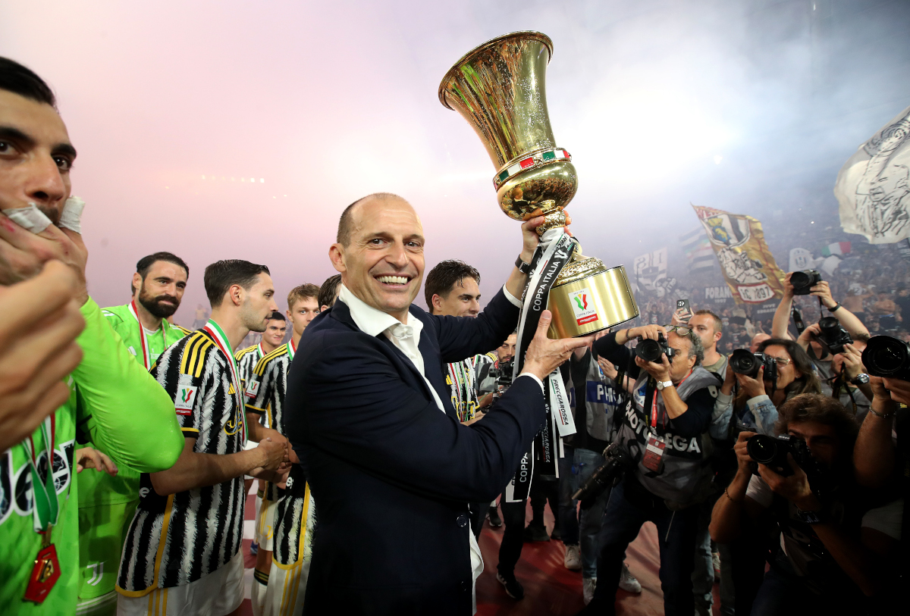
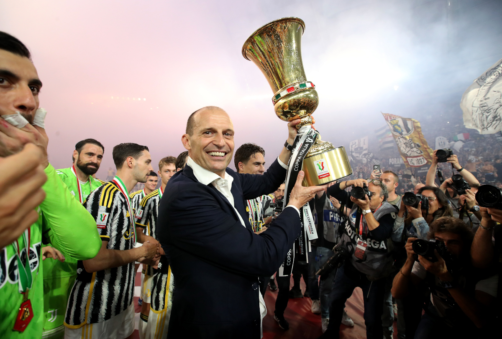

History of Juventus FC
Juventus FC, founded in 1897 in Turin, quickly rose to prominence, winning its first Serie A title in 1905. The club became a dominant force in Italian football, securing multiple Serie A titles throughout the 20th century. Juventus achieved European glory, winning the European Cup (now Champions League) in 1985 and again in 1996.In 2006, the club was relegated to Serie B due to the Calciopoli scandal, but quickly bounced back, returning to Serie A in 2007 and regaining dominance. Juventus then won 9 consecutive Serie A titles from 2011-2020, solidifying their place as Italy's most successful club in recent years. Despite struggles in Europe, the club continues to be a symbol of strength and resilience in both domestic and international football

Winning of Juventus FC
Juventus is Italy's most successful club, with 38 Serie A titles—nearly double the number of Inter Milan's 20. On the international stage, Juventus has claimed 2 UEFA Champions League trophies, in 1985 and 1996. They've also won 3 UEFA Cup/Europa League titles and 2 Intercontinental Cups. These achievements highlight Juventus as one of Europe's elite football clubs, with a legacy built on both domestic and international success.

Trophies of Juventus FC
Juventus is one of Italy's most successful football clubs, with a rich history of trophies and achievements. The club has won 36 Serie A titles, the most in Italy, along with 14 Coppa Italia titles and 10 Supercoppa Italiana titles. In European competitions, Juventus has claimed 2 UEFA Champions League titles, in 1985 and 1996, and has reached the final multiple times. They have also won 3 UEFA Cup/Europa League titles and 2 Intercontinental Cups. Juventus' trophy cabinet includes numerous national and international honors, establishing them as a dominant force in football history.

Consistency of Juventus FC
"Juventus stands as one of Italy's most iconic and successful football clubs, holding the record for the most Serie A championships. With an impressive 38 league titles to their name, Juventus has dominated Italian football for over 127 years. To put that into perspective, Inter Milan, one of their biggest rivals, has won the Serie A title 20 times, while Napoli, another powerhouse in the league, has claimed it just 3 times throughout their history. This remarkable achievement highlights Juventus' incredible consistency and legacy in Italian football."

Players and Managers of Juventus FC
Juventus has featured legendary players like Michel Platini (104 goals), Alessandro Del Piero (290 goals), Roberto Baggio (141 appearances), Cristiano Ronaldo (101 goals in 134 games), and Gigi Buffon (over 680 appearances). Iconic managers such as Giovanni Trapattoni, Marcello Lippi, and Massimiliano Allegri have shaped the club's identity and success. Their contributions have been key in establishing Juventus as one of the most respected football brands globally.
 

Club Values of Juventus FC
Juventus is known for its strong values of excellence, professionalism, and a relentless drive to succeed. These values are embedded in their work ethic, commitment to continuous improvement, and respect for the sport and fans.

Conclusion / recap of why Juventus FC are so successful
Playing for Juventus comes with immense pressure due to the club's rich history of success, the high expectations of passionate fans, and the constant demand for titles both domestically and in Europe. The weight of wearing the Juventus jersey means players are expected to perform at the highest level, with little room for error.
HomePage
web 2